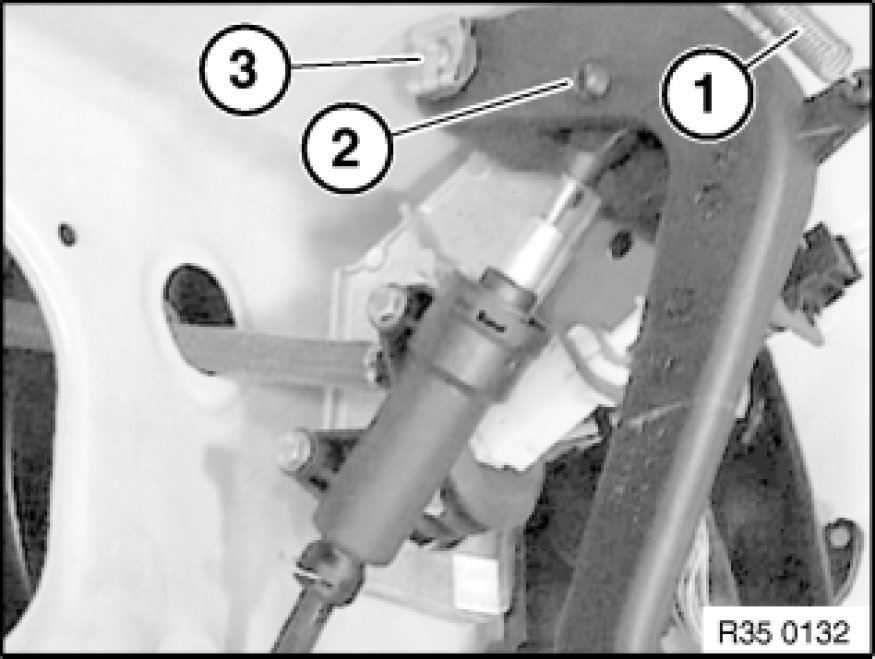
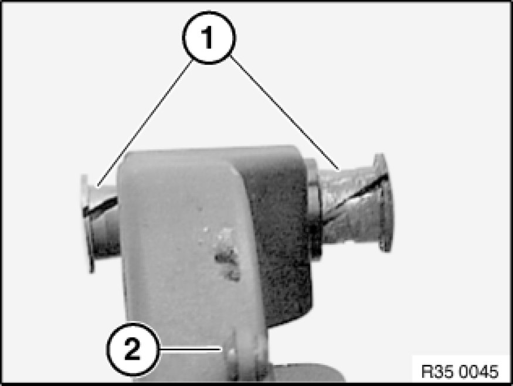

Removing and Installing/Replacing Clutch Pedal
35 31 000 - Removing and installing or replacing clutch pedal

Necessary preliminary tasks:
- Remove pedal trim 51 45 185 Removing and Installing/Replacing Panel For Pedals.

Disconnect return spring (1).
Press pin ends (2) together and remove pin.
Detach locking clip (3) and pull clutch pedal off bearing block.
Installation:
Replace locking clip.
The locking clip must be seated with both legs in the pin groove.

Installation:
Check bearing bushings (1) and replace if necessary.
Lightly grease bearing bushings (1).
Replace rubber grommet (2) if necessary.